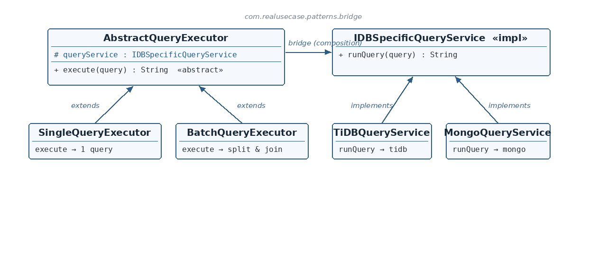

IDBSpecificQueryService.java — the Implementor
☕ 4 min read · 🎬 Video walkthrough · 📊 UML diagram · 💻 Runnable code
⚡ In a nutshell — Decouple an abstraction from its implementation so that the two can vary independently.
Decouple an abstraction from its implementation so that the two can vary independently. Bridge splits one problem into two separate class hierarchies — the what (the Abstraction) and the how (the Implementor) — connected by composition, not inheritance.
Without Bridge, combining M execution styles with N database engines needs M×N classes. With Bridge, it needs M+N.
Query layers in data platforms vary along two independent axes. Axis one — execution style: run a single query, or split a comma-separated batch and run each part. Axis two — storage engine: TiDB speaks SQL, MongoDB speaks its own query language. Hard-wiring these into one hierarchy gives SingleTiDBExecutor, BatchTiDBExecutor, SingleMongoExecutor, BatchMongoExecutor — and every new engine doubles the classes. This module models the production fix: executors (the abstraction) hold a reference to an engine service (the implementor), so either side extends freely.
IDBSpecificQueryService is the Implementor interface — one method, runQuery(query) — with TiDBQueryService and MongoQueryService as concrete implementors.AbstractQueryExecutor is the Abstraction — it holds an IDBSpecificQueryService (the bridge: a protected final composition field) and declares the abstract execute(query).SingleQueryExecutor and BatchQueryExecutor are Refined Abstractions — each defines an execution style, delegating actual query running across the bridge.
Reading the diagram: two independent hierarchies. On the left, execution styles extend AbstractQueryExecutor; on the right, engines implement IDBSpecificQueryService. The horizontal bridge arrow is the composition field — the only connection between the two worlds.
AbstractQueryExecutor — The Abstraction — holds the implementor reference, declares execute.SingleQueryExecutor / BatchQueryExecutor — Refined Abstractions — two execution styles.IDBSpecificQueryService — The Implementor interface — runQuery(query).TiDBQueryService / MongoQueryService — Concrete Implementors — engine-specific query running.BridgeDesignPattern — Client — combines any style with any engine.public interface IDBSpecificQueryService {
String runQuery(String query);
}
TiDBQueryService.java / MongoQueryService.java — concrete Implementorspublic class TiDBQueryService implements IDBSpecificQueryService {
@Override public String runQuery(String query) {
return "tidb result of [" + query + "]";
}
}
AbstractQueryExecutor.java — the Abstraction and the bridge itselfpublic abstract class AbstractQueryExecutor {
protected final IDBSpecificQueryService queryService;
protected AbstractQueryExecutor(IDBSpecificQueryService queryService) {
this.queryService = queryService;
}
public abstract String execute(String query);
}
protected final IDBSpecificQueryService queryService is the bridge — the abstraction has an implementor (composition), rather than being one (inheritance). protected so subclasses can reach across it; final so the pairing is fixed at construction.execute is abstract: each refined abstraction defines its own execution style.SingleQueryExecutor.java — refined abstraction #1@Override public String execute(String query) {
return queryService.runQuery(query);
}
BatchQueryExecutor.java — refined abstraction #2@Override public String execute(String query) {
return Arrays.stream(query.split(","))
.map(String::trim)
.map(queryService::runQuery)
.collect(Collectors.joining("; "));
}
"; ". Note the style logic (split/trim/join) lives entirely on the abstraction side — the engine is only ever asked to run one query at a time.BridgeDesignPattern.java — the clientSystem.out.println(new SingleQueryExecutor(new TiDBQueryService()).execute("select 1"));
System.out.println(new SingleQueryExecutor(new MongoQueryService()).execute("find all"));
System.out.println(new BatchQueryExecutor(new TiDBQueryService()).execute("select 1,select 2"));
System.out.println(new BatchQueryExecutor(new MongoQueryService()).execute("find all,find one"));
SingleTiDBExecutor class exists anywhere.has-a) instead of inheritance (is-a)? Inheritance would weld style and engine into one hierarchy, forcing M×N subclasses. The composition field lets each hierarchy grow alone: a new RedisQueryService works with both existing executors instantly.protected final? protected gives refined abstractions direct access across the bridge; final makes an executor's engine pairing immutable after construction — no half-reconfigured executors.$ java -cp target/classes com.realusecase.patterns.BridgeDesignPattern
tidb result of [select 1]
mongo result of [find all]
tidb result of [select 1]; tidb result of [select 2]
mongo result of [find all]; mongo result of [find one]
java.sql API (abstraction) bridged to vendor drivers (implementors).Two hierarchies, one composition field between them — each side grows without touching the other.
👏 Found this useful? Give it a few claps so more developers discover it, and follow for the whole series — every article ships with a UML diagram, runnable code, a narrated video, and a companion PDF. Happy building! 🚀